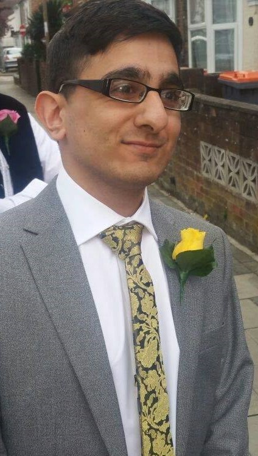

Who am I?
Born in the year of 1995 in the small town of Bedford, I am a outgoing person who is in his final year studying Computer Science BSc (Hons). I am an enthusiastic individual who is conscientious and hard working. My inclination to opt for challenging tasks can be seen in my choice for studying Computer Science BSc (Hons). Computer Science has allowed me to understand theoretical and practical aspects of computer hardware, software, operating systems, networking and how the programmatic ways of storing data in computers so that the data can be used efficiently. Furthermore, I have knowledge in many programming languages such as, Programming in C, Haskell, Java, Python, PHP, SQL which is a Database language and XHTML, HTML and CSS which used to create and develop websites.